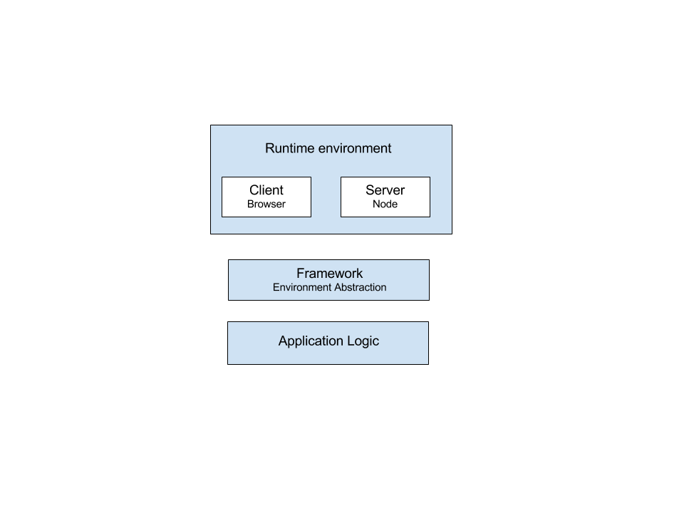
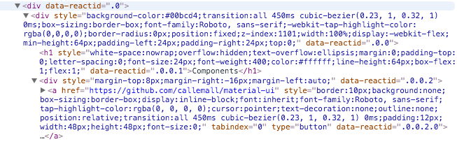
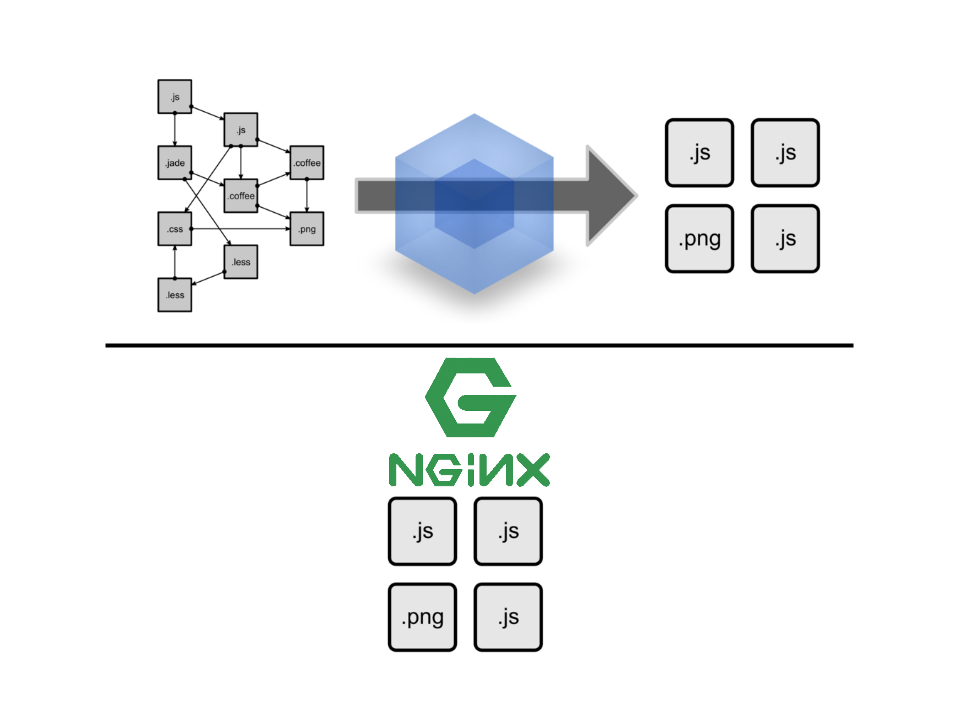
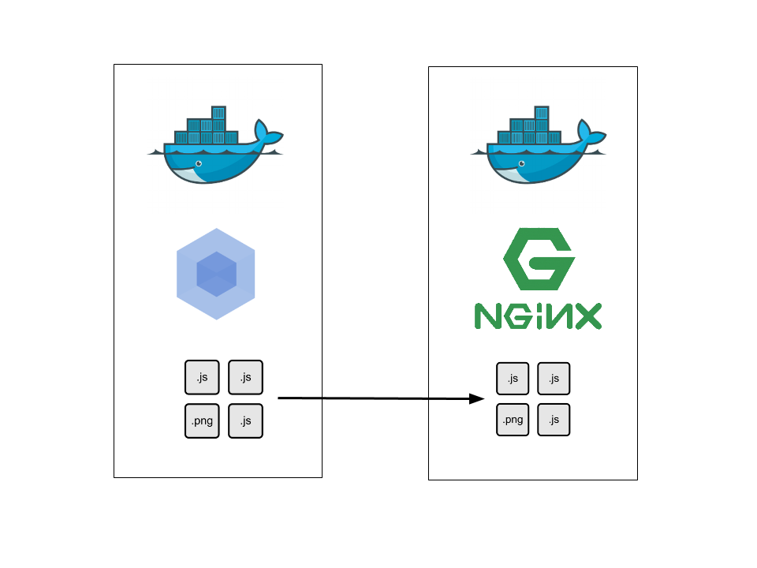

Better then isomorphic JS.
GoEuro Meetup
Seva Dolgopolov @seva_dolgopolov
Who i am
- Freelance Backend Developer
- DevOp and Frontenv Dev in my freetime
by Charlie Robbins
searching for isomorphic/universal JavaScript
Why?
It is perfomant
Search engine indexable
Free progressive enhancements
Fallback by design
How?
The basic idea is the same.
how much does it cost?
"Universal" is not able to scale
if you are a content driven project
utilizing a unidirectional data flow on client side

"Universal" will drive any Search Engine crawler crazy
because they need at least a general symantic
inline style
you definetely don't want to send it within HTML file
"Universal" motivates to use a separate file/request
- it will be automatically cached by browser
- HTML response body itself is much smaller
Fazit
- bloat up a client js with non functional artifacts
- state is leaking in a markup
but
- encourage separation between representation rules and markup itself
- enables lean runtime environment
what if?
4. Separate content from representaion logic
try to write your content just in markdown
---
title: Yaml Header
---
# Markdown body!
use:
- yaml-markdown-loader
- or markdown-with-front-matter-loader
Fazit, again please
- no bloated client js with non functional artifacts
- no state is leaking in a markup
- separation between representation rules and markup and content
- html based runtime environment
Build an html based runtime environment

Build it with docker

or just try Static over Universal
demo project: github.com/startup-boilerplate/homepage